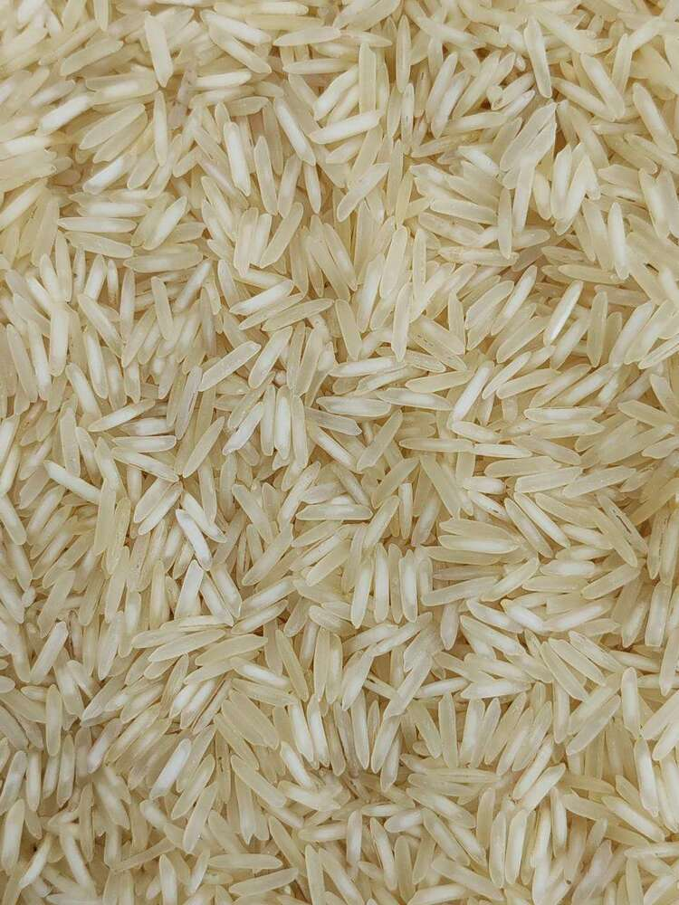
Raw Basmati Rice
Slender aromatic grains selected for elongation, fragrance, and fluffy cooking.
Discover our carefully sourced and processed range of Indian staples, exported worldwide with uncompromising quality standards.
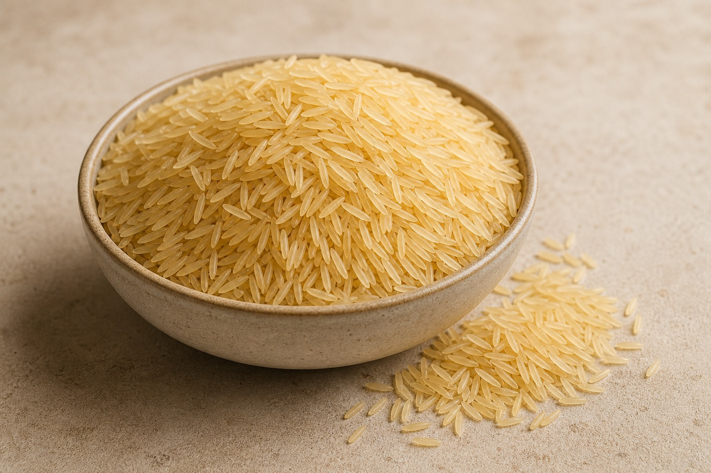
Our premium Basmati rice is renowned worldwide for its distinctive aroma, slender grains, and exceptional cooking qualities. Sourced from the finest farms in India, each grain undergoes rigorous quality checks.
Natural, unprocessed grains perfect for traditional cooking methods.
Partially boiled grains that retain nutrients while being easy to cook.

Slender aromatic grains selected for elongation, fragrance, and fluffy cooking.
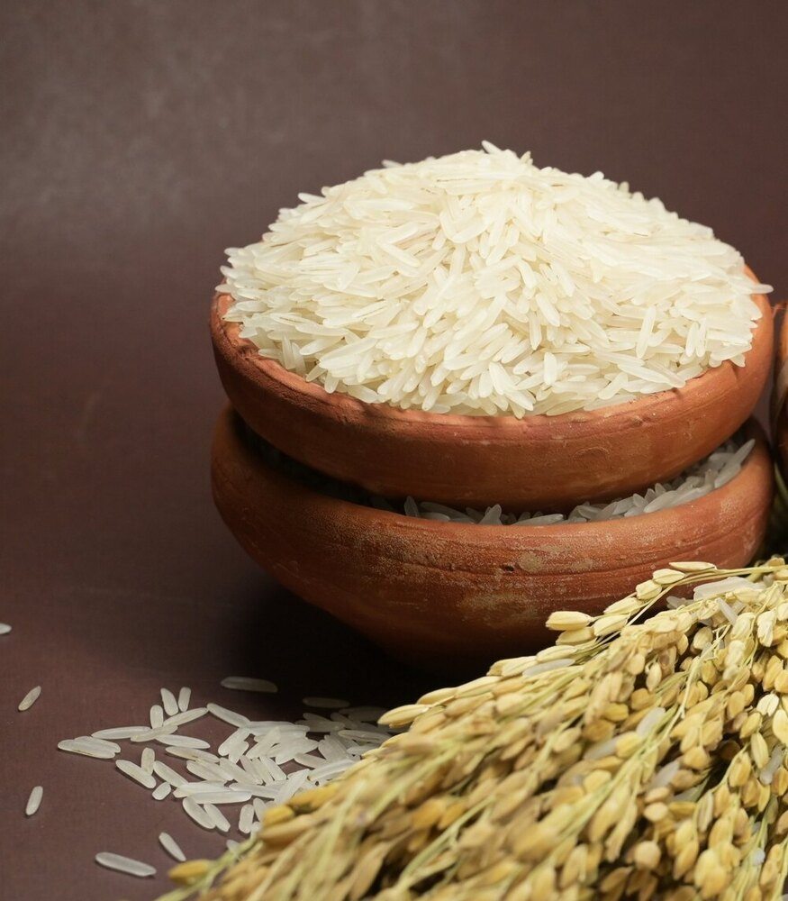
Parboiled grains with added strength, nutrient retention, and consistent separation.
Our non-Basmati rice varieties offer excellent value and nutritional benefits. From diabetic-friendly options to traditional favorites, we cater to diverse market needs with consistent quality.
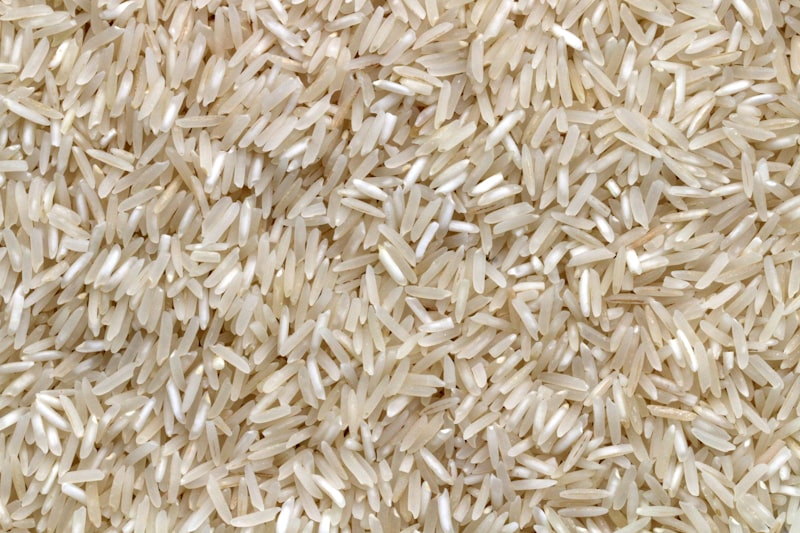
Lightweight medium grains with dependable cooking yield for daily meals and bulk food service.
Balanced aroma, moisture, and grain separation for markets that prefer fresher aged rice.
Lower moisture and cleaner grain expansion for buyers who need firmer, non-sticky rice.
Health-focused rice selected for diabetic-friendly markets and nutrition-conscious households.
Steam-treated grains with good strength, nutrition retention, and reliable cooking performance.
Double-aged polished grains for customers who prefer bright appearance and clean texture.
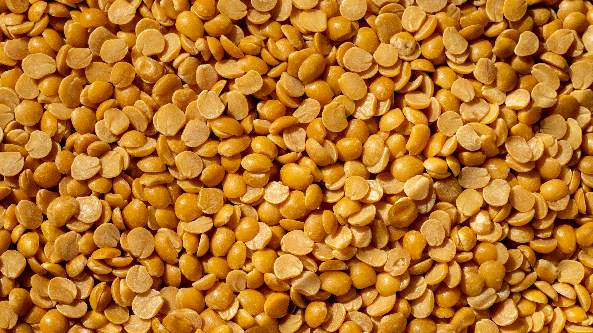
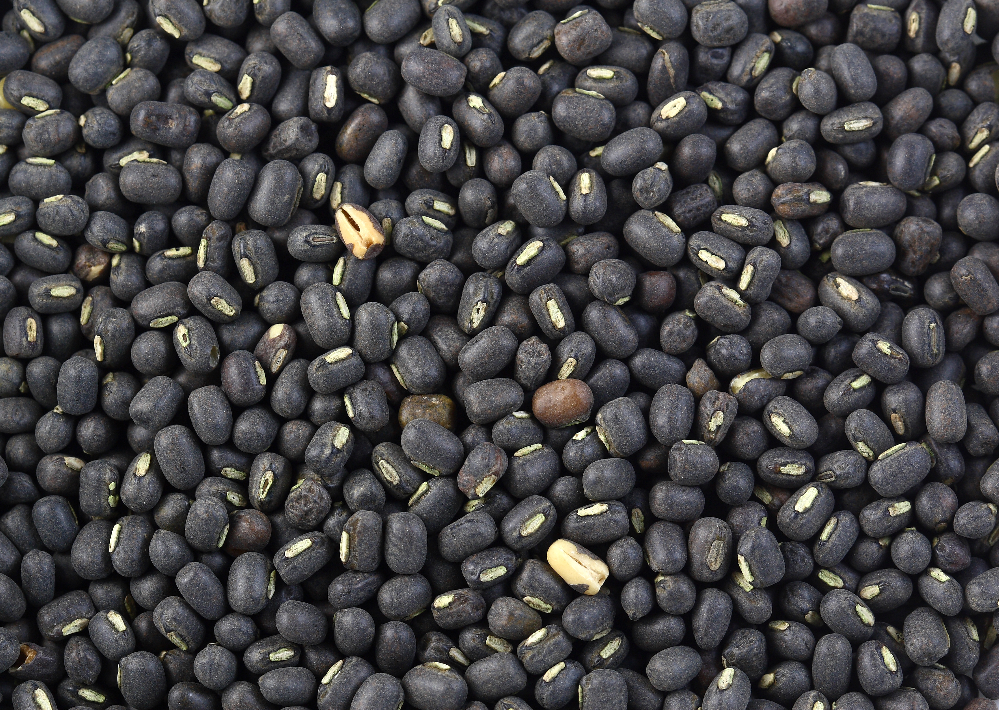
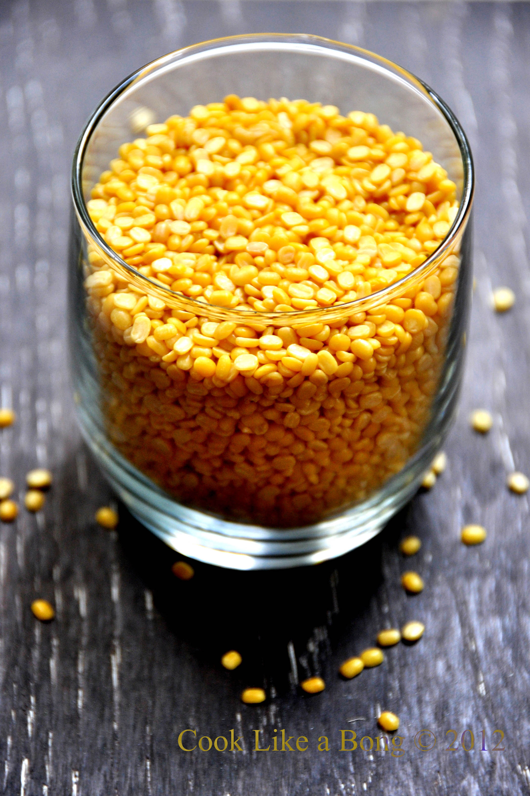
Our premium pulses are sourced from the best growing regions and processed using modern techniques to ensure maximum nutritional value and cooking quality.
Clean yellow pigeon peas with a soft cooked texture for sambar, dal fry, and everyday meals.
Available in split and whole forms for idli, dosa, vada, papad, and traditional preparations.
Quick-cooking green gram with mild flavor, valued for light meals and protein-rich diets.
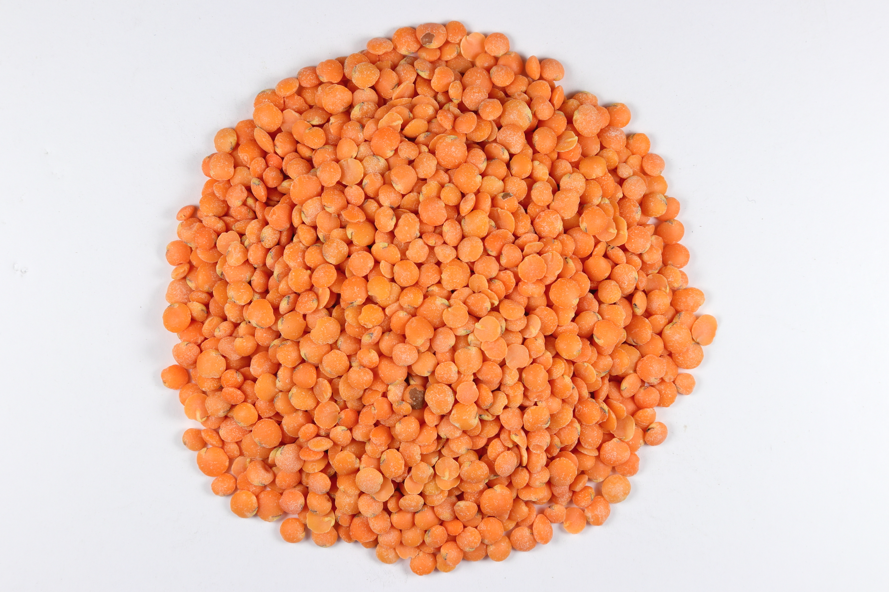
Bright red lentils that cook fast and suit soups, curries, blends, and retail packs.
Our flours are milled from premium grains using traditional methods combined with modern quality control to ensure consistent texture and nutritional value.
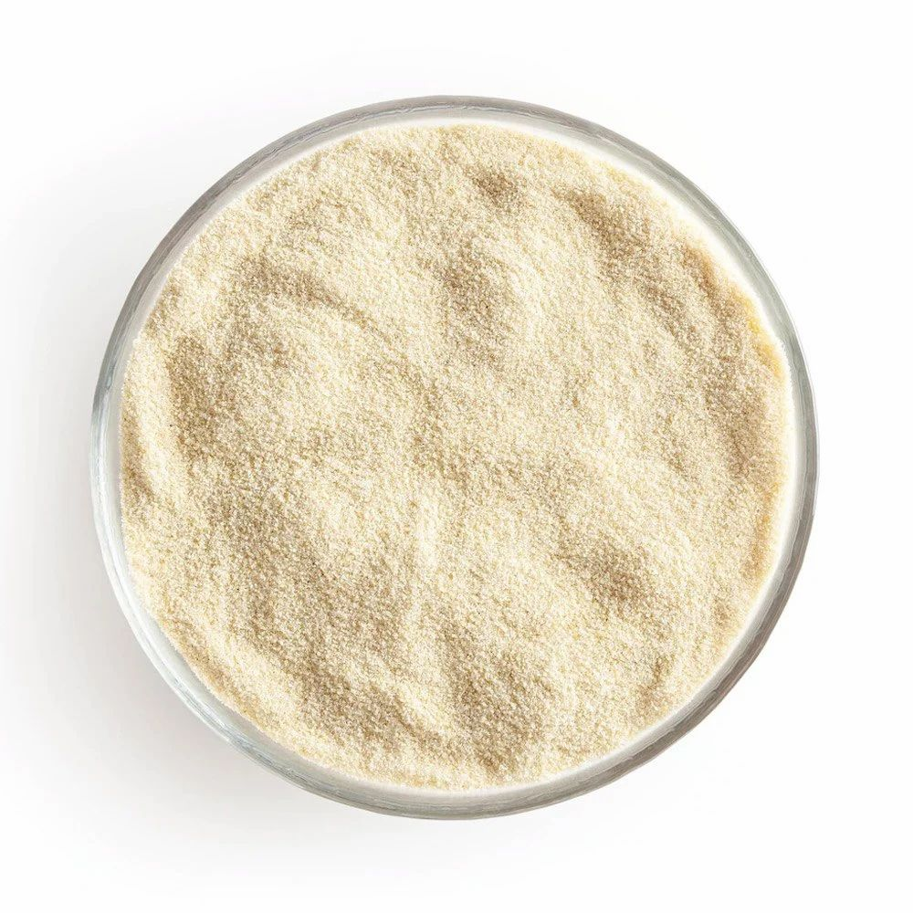
Coarse rice ravva prepared for soft idlis and consistent fermentation results.
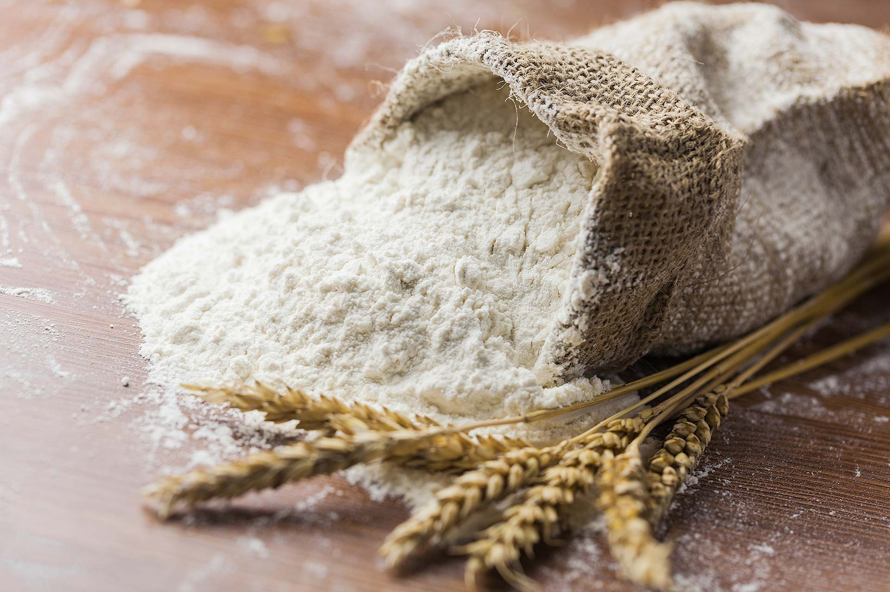
Fine milled flour for chapati, bakery, and multipurpose household requirements.
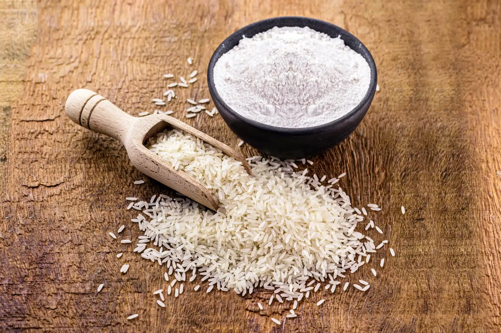
Smooth gluten-free flour for snacks, batters, sweets, and regional recipes.
Standard and custom packaging support for retail, wholesale, and destination-specific export needs.